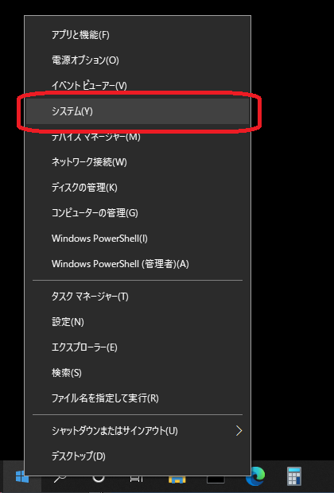
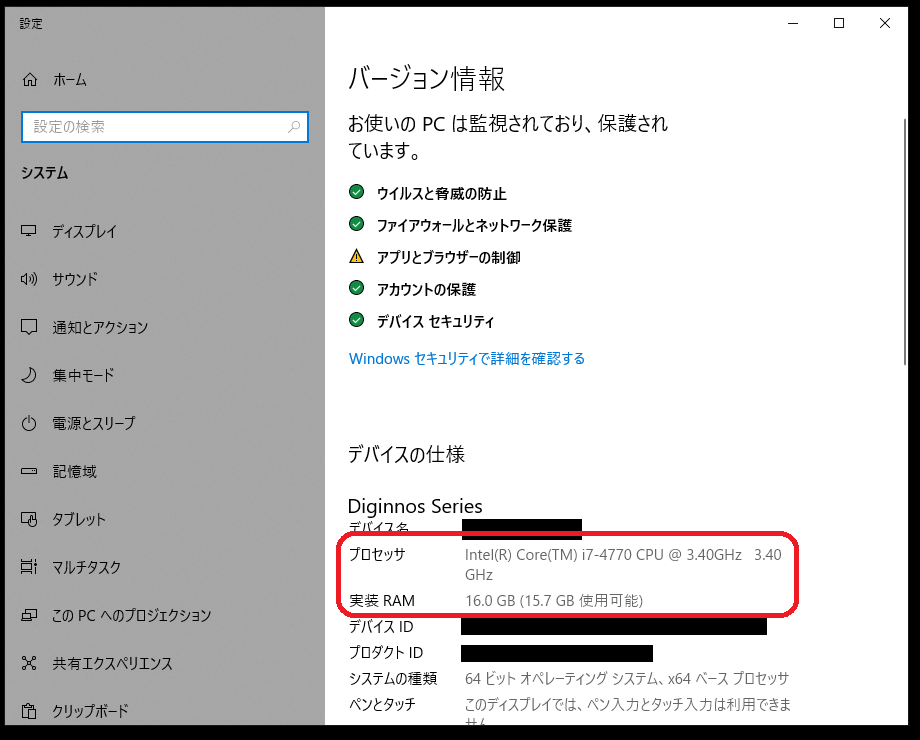
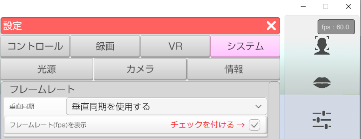

3tene を使用する為の性能を満たしているかを確認する方法です。
要求性能を満たしていないと処理落ちが発生し、快適な操作が行えません。
スタートボタンを右クリックしてメニューの中から「システム」を選択します。

設定のシステム情報が表示されるので「プロセッサ」と「実装RAM」を確認します。
※Windows のバージョンによっては画像とデザインが異なる場合があります。

i7-4770 の部分がプロセッサの製品名です。
数字が大きいほど性能が高い傾向にあります。
3tene の使用に当たっては 最低でも i5-3000 以上のプロセッサを対象としています。
※4000 番台なら第4世代、7000 番台なら第7世代と4桁目の数字で世代がわかります。
3.4GHz の部分が動作クロックになります。
3tene の使用に当たっては 最低でも 2.0GHz 以上のプロセッサを対象としています。
「実装RAM」は搭載されているメモリの量になります。
最低でも 2GB 、無理なく動かすには 4GB 以上が必要です。
3tene と他のソフトウェアを連携して使用する場合は
上記よりもさらに高い性能が必要になります。
細かい要求性能はこちらを参照してください。
フレームレート(画面の更新回数)を表示させて処理速度の確認が可能です。
下記の操作でフレームレートを表示させます。
3tene の設定 → 「システム」タブ → フレームレート(fps)の表示
にチェックを付けてください。

画面右上にフレームレートが表示されます。
フレームレートの値が 50～60fps をキープ出来ない場合は
処理性能が足りていません。